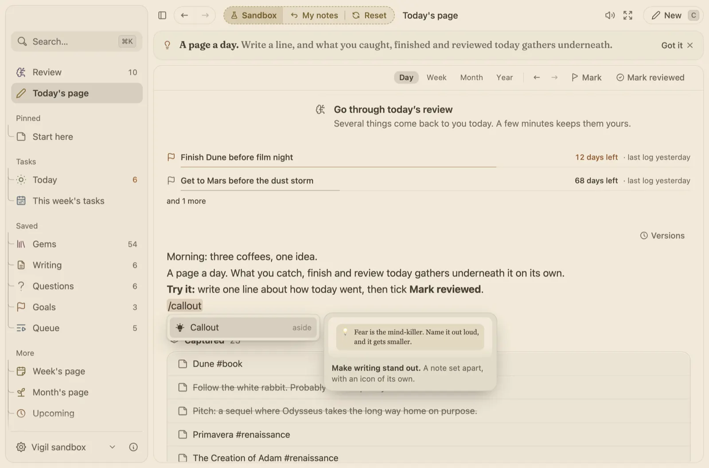

Long notes get a real editor.
Some notes are a line. Some are a chapter you work on for weeks. Type / for the block you need, and every version is kept.

How it works
- Blocks for real work. Headings, lists, to-dos, toggles, callouts, tables, code, maths, drawings, pictures, files, YouTube videos and a table of contents.
- Nothing you write is lost. Drag back through every version of a note on a slider.
- Find your way in a long page. Fold a heading out of the way, find and replace with ⌥ ⌘ F, and give a note other names that search and links find.
- Little helps. Write a sum and an equals sign and the answer appears. Lock a note so a stray key cannot change it.
- Bring your notes in. Import an Obsidian vault or a Notion export with links, tags and pictures kept, or Readwise and Kindle highlights, Markdown, bookmarks and Anki cards.